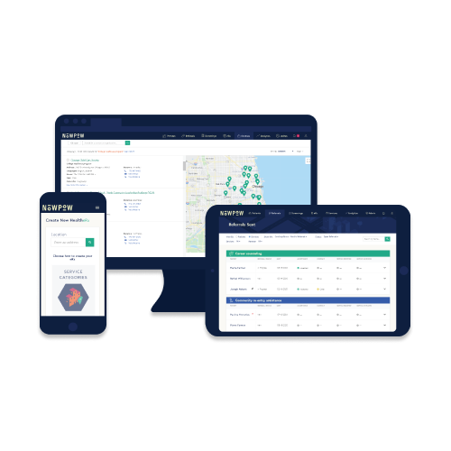
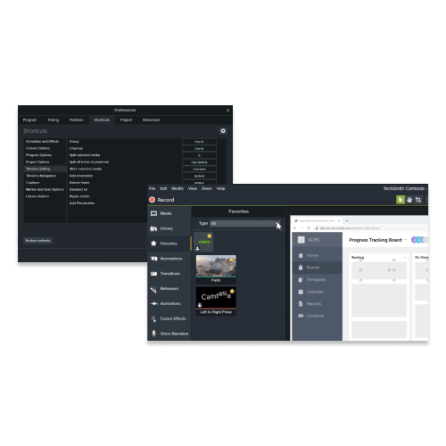
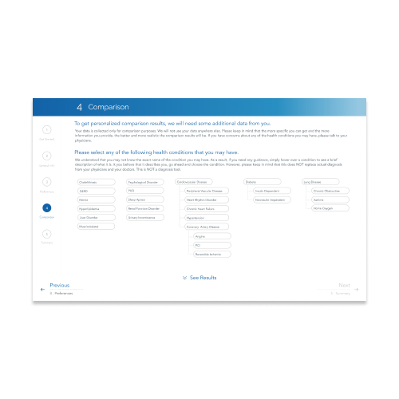

To contact me: Email (noviaw@uci.edu), BlueSky, or LinkedIn.
I am in my final year of PhD and currently on the job market for HCI faculty positions. My doctoral training is in Informatics at the University of California, Irvine, advised by Dr. Madhu Reddy. I am an interdisciplinary HCI researcher studying and designing technologies to support people's wellbeing and mental health across contexts and populations. In particular, I focus on understudied populations, including older adults and immigrant families. My research interests include designing technology-enabled mental health support that is informed by user research. Using what I learn about people's health and technology practices, I identify the appropriate technology and level of its involvement tailored to specific problems and people. Buildling on my PhD experience, I aim to create user-centric interactive systems, including both simple technologies (e.g., a website with psychoeducational materials) and emerging technologies (e.g., GenAI-based chatbot).
As a qualitative researcher, I am passionate about learning about people's lived experiences and translating them into design needs and considerations. I rely on methods such as interviews, focus groups, and participatory design. While I primarily engage with HCI research who publishes at CHI, DIS, and CSCW, I also actively contribute to the digital mental health community, publishing at SDMH and ISRII.
I hold an MS from University of Michigan, Ann Arbor in Information Science, specializing in UX Research/Design, and a BS from San Jose State University in Psychology. My current research agenda focuses on three areas that intersect HCI, health and wellness, psychology, and implementation science.
Visit my Google ScholarThrough collaboration with clinicians and co-design activities with users, I study how technology can adapt mental health interventions while remaining user-friendly and engaging. A continuous research aim is to balance clinicians' perspectives on clinical integrity of mental health interventions and users' desires for non-clinical interactions.
Read selected publications: JMIR Formative Research (In Revision), DIS 2024
I study how people understand mental health and existing technology use across contexts, so I can identify opportunities to leverage emerging technologies and AI to personalize health and wellbeing support. In particular, I am the most interested in how technologies can consider people's cultural backgrounds and complex lived experiences.
Read selected publications: CHI 2027 (In Revision), CHI 2025(b), CHI 2022 Workshop
My projects are interdisciplinary, in which I actively translate HCI concepts and navigate conflicting research timelines and objectives with colleagues and researchers outside of HCI. A future goal is to identify the appropriate balance between reliance on technology and human support for people's wellbeing, including offline interpersonal interactions.
Read selected publications: npj Mental Health Research, CHI 2025, CHI 2023
I follow the design thinking process where I first identify user needs, then iterate design solutions. Through my start-up and internship experiences, I have experience collaborating with product managers and developers to gather requirements for creating high fidelity, interactive, and launch-ready prototypes using Figma.

Researched and designed referral webapps for care providers, case managers, and patients. Referrals focus on social needs.

Designed new functionalities for a video editing desktop application, Camtasia, including hotkeys and favorites.

Researched and designed a decision aid with educational materials on post-surgery lifestyle changes for bariatric patients.
After switching my career trajectories several times, I realized that one way for me to make a difference in the world is to improve healthcare for people while doing something that I love: researching, teaching, and designing! Outside of research and UX design, I love doodling, crocheting, and baking.
Fun fact, I have a streak of 2,400+ days of learning Japanese on Duolingo and recently started learning Italian. I also have an adorable dog named Biscoff who always reminds me to sleep at a reasonable time to maintain my physical and emotional health!